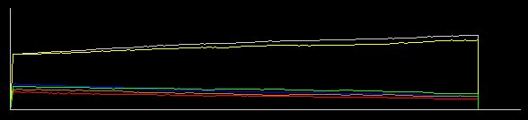

Practica 2
Selección
natural y mutación.
Esta
practica es muy similar a la anterior, y su objetivo también, y
es poner en
evidencia el mecanismo de la selección natural al actuar sobre una población de
seres vivos (el
ejemplo es con lagartijas), la diferencia principal radica en como se
desarrolla el proceso evolutivo dentro de la población, mientras
que en la
practica anterior se muestra solamente la fuerza de la selección
natural para
homogeneizar los colores de las lagartijas según el tipo de
ambiente que se tenga
(de suelo), aquí se muestra un poco mas del proceso evolutivo al
tener incluida
dentro a la mutación.
En la
práctica se tiene una población (grupo de organismo en un
mismo espacio y
tiempo) de Lagartijas con diferentes colores entre los individuos,
aunque a
diferencia de la práctica anterior, en un comienzo en esta
población se tiene
una población en su mayoría amarilla, aunque se pueden
tener individuos de color
café, y color verde.
Para
mostrar el proceso de selección es necesario crear una cierta
presión sobre la
población de lagartijas, así que la practica cuenta con
un grupo de gatos
(depredadores).
Los
gatos
comen lagartijas, pero les cuesta mas cazar a aquellas lagartijas que
se
esconden mejor, en este “juego” las lagartijas que se parecen mas a su
ambiente, son las que mejor se esconden.
Al
tener
juntas a las lagartijas con a los gatos, los gatos comienzan a
comérselas, pero
no se comerán por igual a todas las lagartijas, las lagartijas
que se parecen
más a su ambiente como ya dijimos son mas difíciles de
cazar, y por lo tanto se
las comerán menos y en consecuencia
tendrán mayor numero de hijos que a su vez en conjunto
serán un mayor
numero de lagartijas parecidas a su medio ambiente.
De esta
manera hemos creado una imitación del proceso de la
selección natural, en base
a un juego en la computadora.
A
diferencia de la práctica anterior, en la que los hijos nacen
según las
características de los padres, en esta se tiene la probabilidad
de mutar, es
decir que los hijos presenten características particulares
diferentes a las
presentes en cualquiera de los padres, y que estas
características nuevas pasen
a su vez a sus propios hijos.
Debido
a la
complejidad de los procesos de mutación, aquí se halla
simplificados de la
siguiente manera: se tienen tres hálelos, unos para cada color,
amarillo, café,
y verde. El hálelo amarillo siempre es recesivo ante la
presencia de cualquiera
de los otros, es decir, si alguien tiene un alelo amarillo y
también tiene
alguno de los otros, nunca será de color amarillo, los otros
colores son
dominantes del alelo amarillo. Mientras que en los hálelos
verdes y cafés, se
puede modificar con el botón de dominancia para determinar cual
es el hálelo
dominante de los dos. La mutación se tiene dada, por la
probabilidad de que al
momento de tener hijos, los hálelos que pasan los padres pueden
cambiar a
alguno de los otros, si se pasa un hálelo amarillo, este puede
convertirse a
verde o a café, y si es café puede pasar a verde o
amarillo, etc.
El
proceso
evolutivo en este juego se da cuando después de un tiempo la
población entera
ha cambiado de color. Aunque a diferencia de la práctica
anterior, se tiene la
aparición de colores no presentes con anterioridad en la
población.
Retomando,
la selección natural se encuentra representada por la presencia
de gatos, que
se comen a las lagartijas, pero con más dificultad a las que se
parecen al
ambiente. Y la adaptación al medio ambiente de las lagartijas,
se encuentra
representada por el cambio de los colores en las lagartijas hacia
parecerse mas
a su medio ambiente, gracias a los mutantes que se parecen mas a su
medio
ambiente.
Objetivos.
El
objetivo
consiste en entender el proceso de la selección natural actuando
sobre las
variantes que surgen de manera natural en las poblaciones, y como la
selección
natural puede ser una fuerza de cambio dentro de las poblaciones de
seres
vivos, impulsando las nuevas variantes favorables a desplazar a las
anteriores.
En
nuestro
caso como es que los colores en la población de lagartijas
cambian en el tiempo
debido a la presión de la depredación por gatos, siendo
substituido el color
inicial por uno nuevo surgido por mutación.
Los
controles de la práctica.
Los
botones
que se tienen para modificar el comportamiento del programa son los
siguientes:
-Primero
tenemos los dos clásicos de avance y alto, ningún
botón aparte del de alto,
funciona si el avance ha sido activado, para reactivar la
función de los
botones, es necesario detener el programa por medio del botón de
alto.
-Después
tenemos el botón para vaciar el tablero (con una escoba) y el
botón para llenarlo
de individuos al azar (coloración al azar).
-Y por
ultimo tenemos los botones para colocar
criaturas en lugares particulares, tanto presas como depredadores.
Primero se oprime el botón de selección del lado
derecho  y al cambiar el
cursor (a cursor para
seleccionar), se oprime el botón de la criatura que se desee
colocar, y al fin
se selecciona el lugar donde se piensa colocar a la criatura.
y al cambiar el
cursor (a cursor para
seleccionar), se oprime el botón de la criatura que se desee
colocar, y al fin
se selecciona el lugar donde se piensa colocar a la criatura.
El
“tablero” de juego.
Abajo, en
la parte en que se grafican los datos la línea verde muestra la
cantidad de
lagartija verdes, la café de lagartijas cafés, y la
amarilla las lagartija
amarillas.

El programa
Para
iniciar el programa solo se necesita hacer un doble clic sobre el
archivo que
dice practica2, esté se encuentra en el mismo directorio que la
pagina de
inicio.
Una
practica de ejemplo.
Primero
que
nada abrimos el programa a través del enlace en esta pagina.
Después
oprimimos el botón de llenado con el cual en el tablero aparecen
organismos
distribuidos de manera azarosa, en esta practica el tablero se llena
solo con
lagartijas amarillas y gatos, ya que el objetivo es ver como estas
lagartija
son remplazadas por los mutantes verdes y cafés que van
apareciendo por
mutación.
Luego
podemos oprimir el botón de avance y ver como se mueven los
organismos y como
se da la dinámica en un tipo de piso neutro, es decir sin
ninguno de los
organismos en el tablero favorecido por su color, en particular como
una
pequeñísima parte de la población se vuelve verde
y café por mutación, pero que
al no ser favorecidos por la selección no predominan en la
población.
A
continuación oprimimos el botón de alto, y cambiamos el
tipo de piso por uno
café o verde, y oprimimos el botón de avance, y con ello
observamos como las
lagartijas que surgen o surgieron ya por mutación y que se
parecen mas al tipo
de piso son la que comienzan a crecer dentro de la población
gracias a la
selección natural y terminan por remplazar a la población
original.
Después
de
repetir estos pasos no se tiene un mismo resultado de manera forzosa,
en
general es mucho mas probable que las lagartijas que tienen un color
mucho mas
parecido al color del piso sean las que predominen, pero para que se de
este
resultado es necesario que pase algún tiempo en el cual si no se
dan la
condiciones apropiadas, podría ser que incluso la
población entera se
extinguiera, es decir que todos fueran comidos por los gatos, pero esto
forma
parte dentro de los procesos en biología donde no pasa siempre lo mismo sino que todo se da con una cierta
probabilidad.